本项目以公开数据集 ROCOv2（医学影像+图注+CUI） 为基底，构建一条可复现的医学多模态数据流水线： P0 合规摄取与跨集泄漏检查 → P1 六大质量算子 → P2 用真实 BiomedCLIP 权重做跨模态检索评测 → P3 数据飞轮（难例挖掘/难负例构造/四种数据选择） → P4 冻结编码器+小对齐头对照。 所有真实权重均通过严格门禁加载（zero-missing/zero-unexpected + 指纹），检索评测在 冻结 test 集 上进行，禁止据 test 调参。
正例平均相似度 0.453，净化后负例平均 0.140， AUROC(clean)=0.998；共排除 146 个"模糊负例"（图注高度重叠或图像近重复）， 避免负例被系统性高估。validation（开发集）R@1=0.727，test（冻结集）R@1=0.805，二者量级一致、无泄露迹象。
| 模态 | n | R@1 | R@5 | R@10 | MRR |
|---|---|---|---|---|---|
| computed-tomography | 64 | 81.2% | 96.9% | 98.4% | 0.878 |
| histopathology | 1 | 100.0% | 100.0% | 100.0% | 1.000 |
| magnetic-resonance | 23 | 91.3% | 100.0% | 100.0% | 0.949 |
| multimodal-fusion | 1 | 100.0% | 100.0% | 100.0% | 1.000 |
| nuclear-medicine | 3 | 100.0% | 100.0% | 100.0% | 1.000 |
| photograph-clinical | 1 | 100.0% | 100.0% | 100.0% | 1.000 |
| ultrasound | 15 | 86.7% | 100.0% | 100.0% | 0.917 |
| unknown | 47 | 70.2% | 93.6% | 100.0% | 0.809 |
| x-ray | 45 | 80.0% | 95.6% | 97.8% | 0.861 |
| 图注长度带 | n | R@1 | R@5 | R@10 | MRR |
|---|---|---|---|---|---|
| long | 83 | 83.1% | 97.6% | 100.0% | 0.888 |
| medium | 88 | 80.7% | 97.7% | 98.9% | 0.877 |
| short | 29 | 72.4% | 89.7% | 96.6% | 0.813 |
| 概念组 | n | R@1 | R@5 | R@10 | MRR |
|---|---|---|---|---|---|
| has_shared_concept | 200 | 80.5% | 96.5% | 99.0% | 0.873 |
长尾/单例概念组（longtail_all_singleton）通常比共享概念组更难检索，提示"稀缺概念"是数据飞轮的重点增益区。
review 字段，未经人工复核前不宣称任何数据缺陷。| split | 候选 | 确定负例 | 确定占比 | 难负例 | 审查-共概念 | 审查-图注重叠 | 审查-近重复 |
|---|---|---|---|---|---|---|---|
| train | 3549 | 913 | 25.7% | 2959 | 2605 | 180 | 2 |
| validation | 1187 | 305 | 25.7% | 977 | 880 | 35 | 0 |
确定负例需同时通过三重检查；未通过者标记 needs_review 并单列原因（以"共享医学概念"为主，符合 ROCOv2 同论文多子图的特性）。
| 策略 | 选中数 | 模态覆盖 | CUI覆盖 | 困难样本 | 近重复占比 | 平均token |
|---|---|---|---|---|---|---|
| A_random | 200 | 8 | 18 | 53 | 2.0% | 21.4 |
| B_quality | 200 | 8 | 18 | 53 | 2.0% | 21.4 |
| C_quality_hard | 200 | 8 | 17 | 166 | 4.0% | 18.1 |
| D_quality_longtail | 200 | 6 | 15 | 61 | 3.5% | 18.9 |
| 策略对 | 集合 Jaccard |
|---|---|
| A_random vs B_quality | 100.0% |
| A_random vs C_quality_hard | 19.8% |
| A_random vs D_quality_longtail | 21.9% |
| B_quality vs C_quality_hard | 19.8% |
| B_quality vs D_quality_longtail | 21.9% |
| C_quality_hard vs D_quality_longtail | 21.6% |
A 原始随机 / B 质量过滤后随机（本清洁子集二者完全一致）/ C 质量+困难优先 / D 质量+长尾优先。 C 把困难样本占比从 ~27% 提升到 83%；D 模态覆盖回落到 6（长尾优先的代价）。这些只是数据侧描述， 是否带来模型指标差异必须由 P4 对照训练给出。
| 设置 | 训练样本数 | I2T R@1 | T2I R@1 |
|---|---|---|---|
| 冻结基线（不训练） | - | 80.5% | 81.0% |
| A_random | 200 | 57.0% | 59.5% |
| B_quality | 200 | 57.0% | 59.5% |
| C_quality_hard | 200 | 48.0% | 45.5% |
| D_quality_longtail | 200 | 51.0% | 54.0% |
冻结 BiomedCLIP 编码器已在本任务上接近天花板（test I2T R@1≈0.81）。仅训 200 样本小对齐头对数据选择策略的区分力有限；本实验如实报告，不夸大差异。
以下 4 个案例直接从真实检索结果中抽取，图像与相似度均来自本项目对 BiomedCLIP 的真实前向推理， 未做任何修饰。正确配对位置即该样本在候选池中的真实排名。所有缩略图保留原始出处与许可信息。
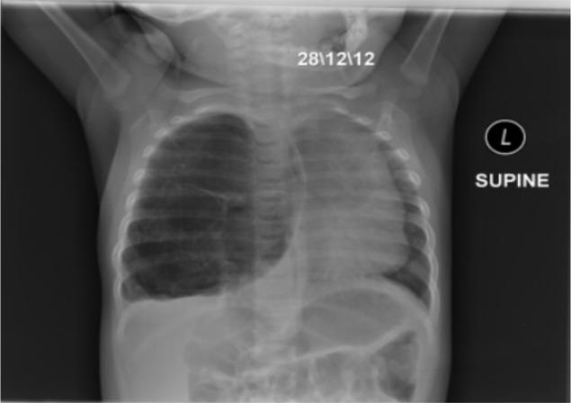
查询图像与正确图注在候选集中排名第 1（I2T/T2I 双方向），体现 BiomedCLIP 在医学图文上的强对齐。
| # | 状态 | 相似度 | 候选图注（截断） |
|---|---|---|---|
| 1 | ✗ | 0.4340 | Repeat chest X-ray reveals expanded lung field with no collapse |
| 2 | ✗ | 0.4276 | Chest X‐ray showing left pneumothorax |
| 3 | ✗ | 0.4178 | X-ray of the chest: an area of dense opacification in the right apical region; extensive bilateral upper lung |
| 4 | ✓ 正确 | 0.4115 | Chest X-ray of an 8-month-old infant with congenital pulmonary malformations. N.B: The date on the CXR is acco |
| 5 | ✗ | 0.3901 | Chest X-ray: left lateral view. |
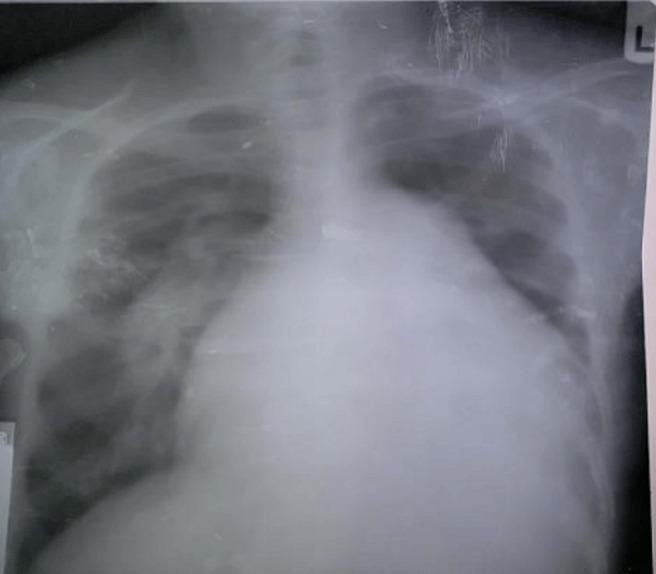
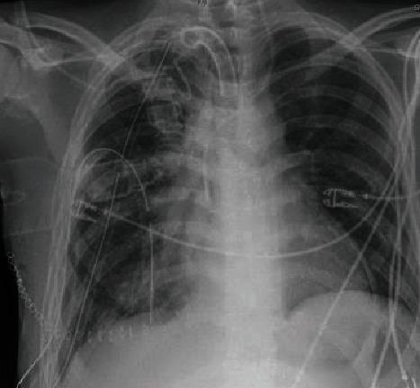
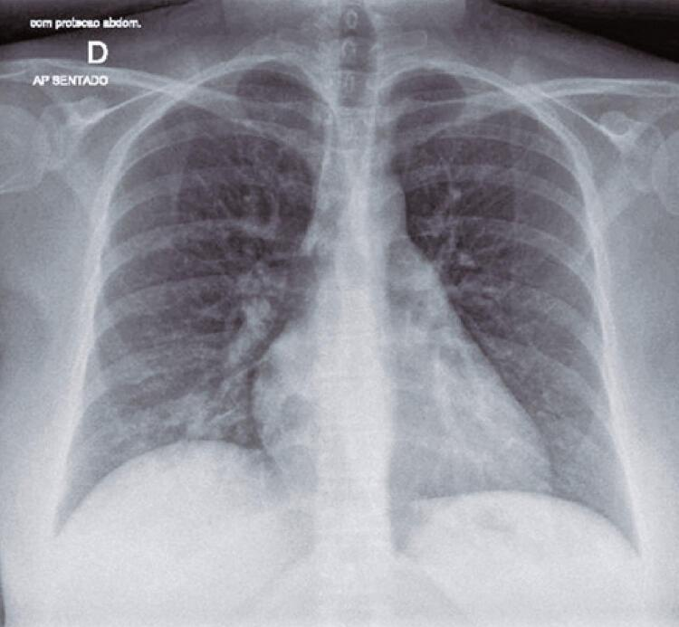
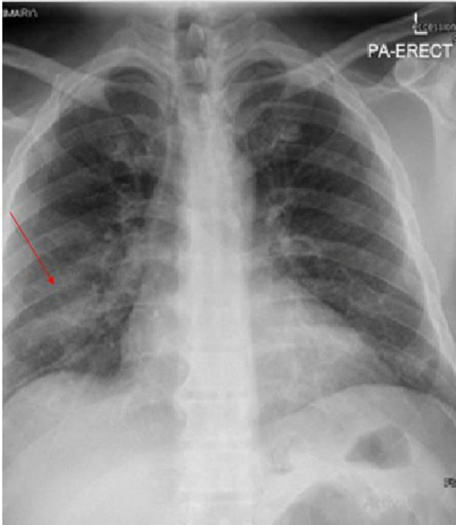
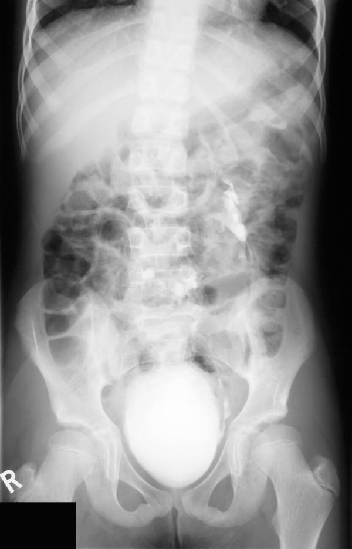
最强干扰负例图注：Ureteral duplication: Frontal radiograph from an intravenous urogram study shows bilateral complete ureteral duplication. The opening of the （rival sim=0.449 vs 正例 sim=0.428）
正确图注在候选集中仅排第 43 名；一个高相似负例（rival）被排在更前，属于已挖掘的 229 条困难样本之一。这类样本是数据飞轮优先回填的候选，但须经人工复核确认是否为真正错配，而非模型合理歧义。
| # | 状态 | 相似度 | 候选图注（截断） |
|---|---|---|---|
| 1 | ✗ | 0.4485 | Ureteral duplication: Frontal radiograph from an intravenous urogram study shows bilateral complete ureteral d |
| 2 | ✗ | 0.4448 | Successful decompression confirmed by abdominal radiograph on day 4. |
| 3 | ✗ | 0.4447 | X-ray of abdomen, performed on 05 December 2008, revealed multiple calculi in urinary bladder. |
| 4 | ✗ | 0.4446 | Bilateral ureteral tuberculosis and involvement of the bladder. At excretory urography, irregular distal urete |
| 5 | ✗ | 0.4382 | Vascular calcification in an abdominal radiograph. |
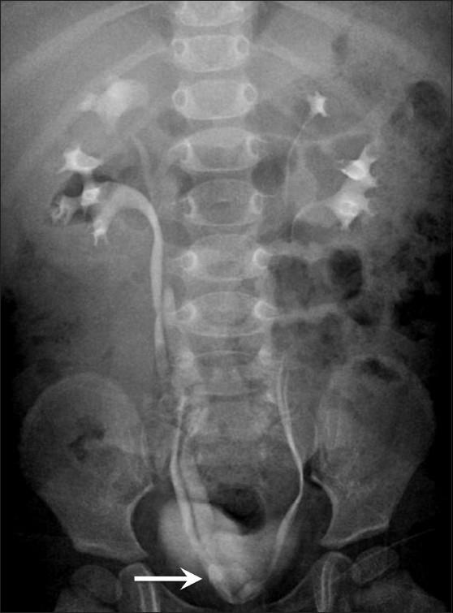
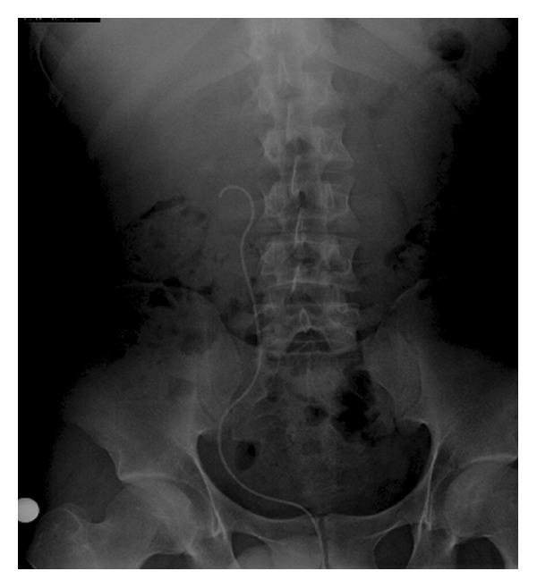
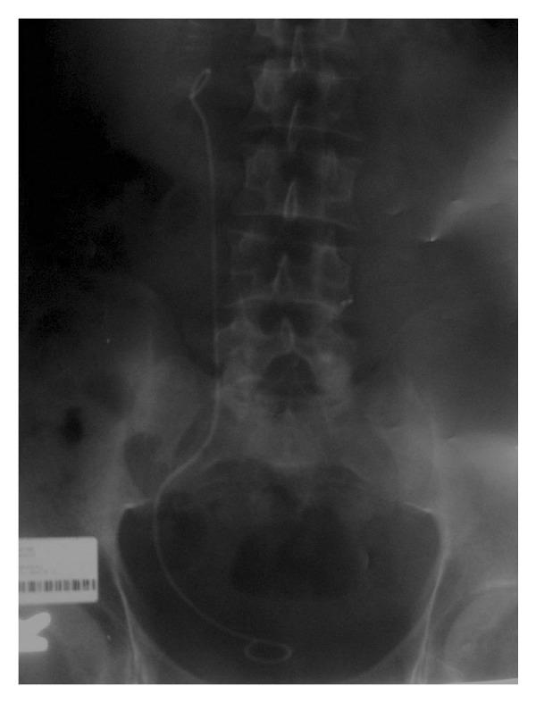
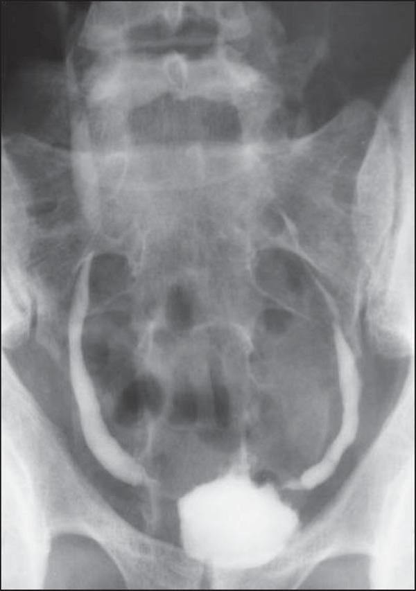
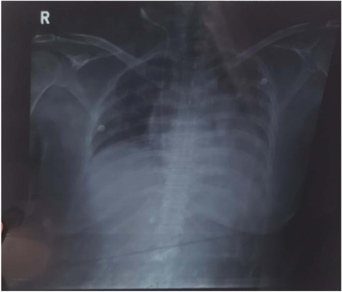
质量算子标记：CAPTION_SHORT
该样本被质量算子标记为 ['CAPTION_SHORT']。在 P1 流水线中此类样本会被记录告警/拒绝并附带原因，保证进入训练的数据具备可追溯的血缘。合成缺陷测试显示算子对缺失/空/占位/重复图像等缺陷的自动识别率为 5/5 且无假阳性。
| # | 状态 | 相似度 | 候选图注（截断） |
|---|---|---|---|
| 1 | ✗ | 0.4061 | Chest X-ray demonstrating placement of the four chest drains. |
| 2 | ✗ | 0.4058 | Chest X‐ray showing left pneumothorax |
| 3 | ✗ | 0.4006 | Repeat chest X-ray reveals expanded lung field with no collapse |
| 4 | ✗ | 0.3797 | Post-intubation, increased abdominal distension. |
| 5 | ✗ | 0.3763 | Chest x- ray (PA view) Chest x-ray showed right side lower zone evolving consolidation, extending to periphery |
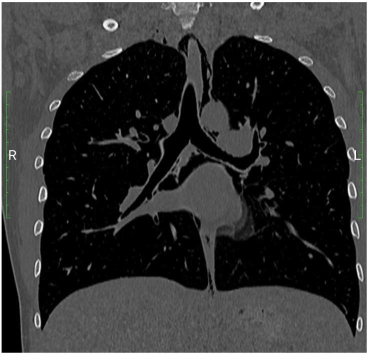
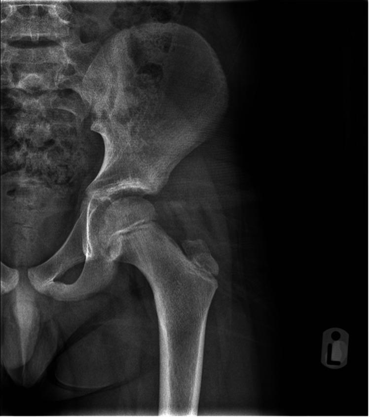
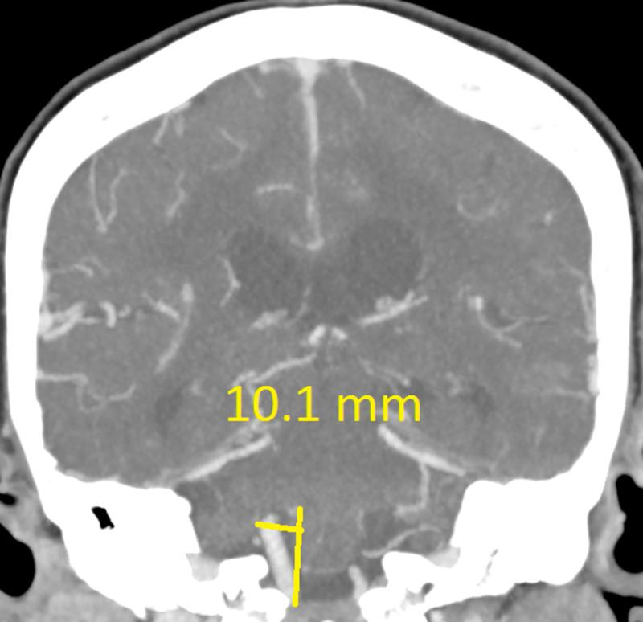
最强干扰负例图注：Right middle cerebral artery (MCA) M1 segment diameter （rival sim=0.488 vs 正例 sim=0.474）
查询与 rival 共享同一医学概念（共享概念干扰），模型难以区分。此类'图文配对歧义'样本在飞轮中被显式排除（ambiguity_excluded）并标注需人工审核，避免把合理歧义误当错误。未人工确认前不计入确定错配。
| # | 状态 | 相似度 | 候选图注（截断） |
|---|---|---|---|
| 1 | ✗ | 0.4877 | Right middle cerebral artery (MCA) M1 segment diameter |
| 2 | ✓ 正确 | 0.4739 | Right vertebral artery deviation |
| 3 | ✗ | 0.4571 | Scheduled follow-up CTA at 4 months redemonstrates the left supraclinoid aneurysm with significant increase in |
| 4 | ✗ | 0.4185 | CT angiogram with no thrombus after 1 week of treatment. |
| 5 | ✗ | 0.3982 | Anterior-posterior view of cerebral angiographic (DSA) image demonstrating an 8 mm right M3-MCA fusiform aneur |
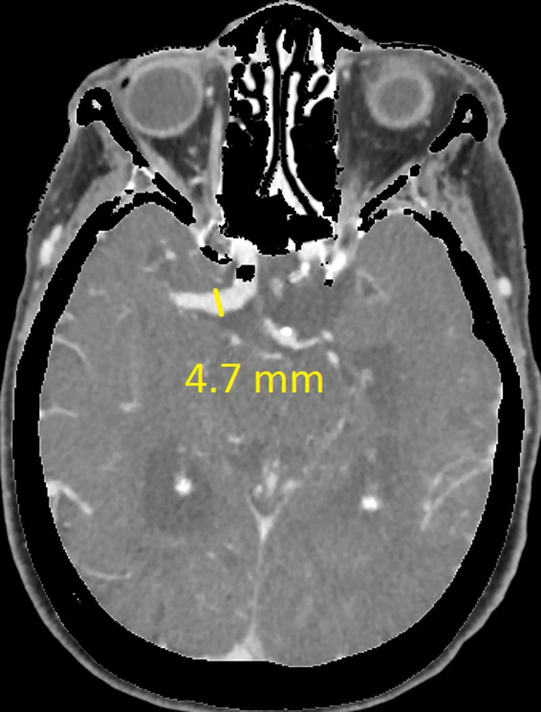
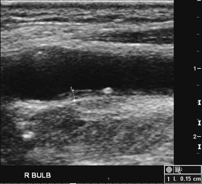
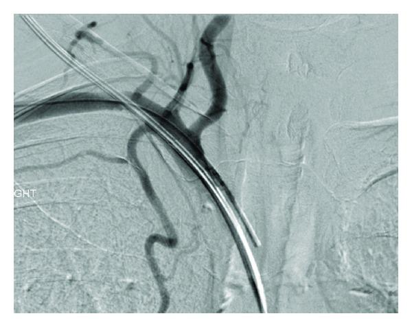
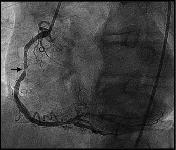
| sample_id | split | kind | I2T排名 | 正例sim | rival | margin | 图注(截断) |
|---|---|---|---|---|---|---|---|
| ROCOv2_2023_train_001071 | train | risk_false_positive | 2 | 0.474 | ROCOv2_2023_train_001070 | -0.014 | Right vertebral artery deviation |
| ROCOv2_2023_train_001075 | train | risk_false_positive | 2 | 0.437 | ROCOv2_2023_train_031713 | -0.012 | Postoperative radiograph after the Weaver-Dunn-Procedure aug… |
| ROCOv2_2023_train_001078 | train | risk_false_positive | 5 | 0.389 | ROCOv2_2023_train_001077 | -0.032 | Figure 2:MRI showing dilated (right) and normal cavity (left… |
| ROCOv2_2023_train_001082 | train | risk_false_positive | 5 | 0.427 | ROCOv2_2023_train_050165 | -0.035 | Orthopantomogram showing well-defined radiolucency with scal… |
| ROCOv2_2023_train_001083 | train | risk_false_positive | 5 | 0.406 | ROCOv2_2023_train_001082 | -0.040 | Orthopantomogram obtained 6 months post-operative shows evid… |
| ROCOv2_2023_train_001086 | train | risk_false_positive | 2 | 0.464 | ROCOv2_2023_train_024246 | -0.002 | 64-year-old male diagnosed with traumatic right ventricular … |
| ROCOv2_2023_train_001087 | train | risk_false_positive | 3 | 0.405 | ROCOv2_2023_train_059522 | -0.066 | Brain MRI of the patient with juvenile form of MLD. |
| ROCOv2_2023_train_001092 | train | risk_false_positive | 2 | 0.444 | ROCOv2_2023_train_038328 | -0.014 | preoperative diagnostic radiograph |
| ROCOv2_2023_train_005522 | train | risk_false_positive | 2 | 0.350 | ROCOv2_2023_train_022021 | -0.026 | Postero-anterior radiograph at age 21. The tumour is indisce… |
| ROCOv2_2023_train_005533 | train | risk_false_positive | 8 | 0.428 | ROCOv2_2023_train_005545 | -0.020 | Intravenous Urogram showing crossed fused renal ectopia. |
| ROCOv2_2023_train_005536 | train | risk_false_positive | 2 | 0.454 | ROCOv2_2023_train_012512 | -0.005 | Chest radiograph shows small volume of the right lung, mild … |
| ROCOv2_2023_train_005541 | train | risk_false_positive | 4 | 0.421 | ROCOv2_2023_train_050156 | -0.006 | Normal right renal vein |
完整 229 条见 reports/hard_cases.jsonl，每条预留 review.is_true_mismatch / reviewer_note / confirmed_by 供人工填写。
microsoft/BiomedCLIP-PubMedBERT_256-vit_base_patch16_224；
文件 SHA256 与张量级 SHA256 见 reports/embedding_run.json，加载模式 strict zero-missing zero-unexpected。NOT_TESTED。x = x + mlp(norm2(x))），
② auroc_rank_based 计数方向反了（已修正为统计 neg<pos）。修正后指标恢复至上述真实水平，说明评测链路可信。生成时间（UTC）：2026-10-25T21:36:05.589600+00:00